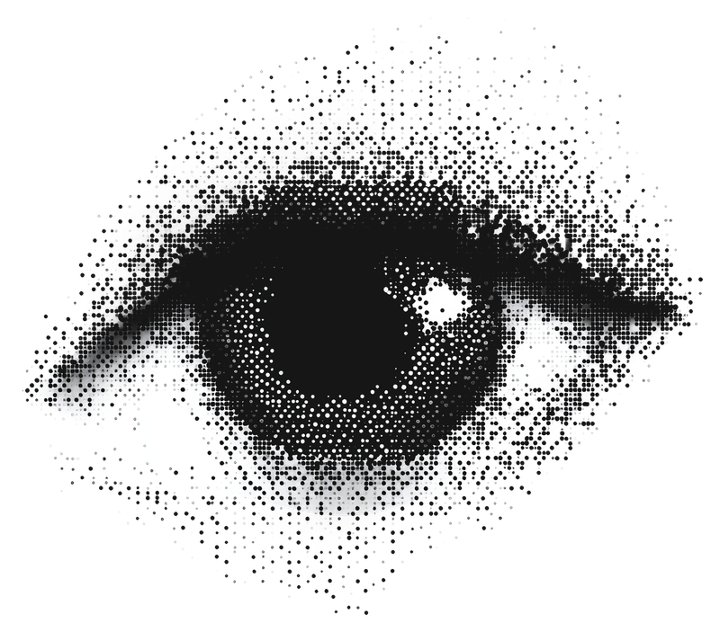

System Utilities
Select a tool to launch it.
Chroma Converter
Hex, RGB, HSL, and Contrast Checker.

Image Converter
Suite of useful image tools.
Minecraft Math
Suite of useful tools, including stack calculator & Nether coordinates.
Schedule Merger
Tool to visualize how class schedules overlap.
Papa Save Editor
Modify save files for Papa Louie games.
BDX to MIDI
Convert binary audio sequences to MIDI.

Text Forensics Lab
Stylometry suite. Analyze text to predict the author's native language and cognitive profile.